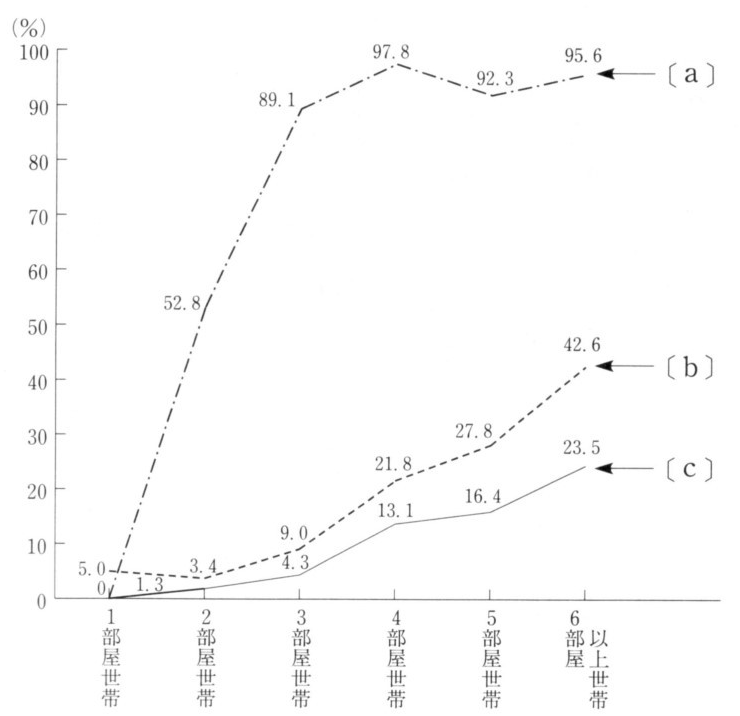

（1）
警告
問1 彼は医師から警告を受けているにもかかわらず、飲酒の習慣を改めようとしない。病気も悪くなる一方である。
問2 あの姉妹は姿がとてもよく似ている。きょうはふたりとも髪にリボンを結んでいる。
問3 この本の著者は、この地域をくわしく調査し、土地や住民の生活のようすを細かくていねいに観察して書いた。この作品は、文芸作品としても、身近な歴史資料としてもおもしろい読み物である。
問4 担当の係員は、書類の束を腕に抱えて部屋に入ってきた。
問1 このきっぷは、はつばいの日から1か月にかぎり、ゆうこうです。
問2 にもつのじゅうりょうが20キロをちょうかした場合は、ついか料金をせいきゅうされます。
問3 しんこくな経済ふきょうの中では、しょうひしゃはできるだけむだをはぶき、生活に必要なものだけを買うようになる。
問4 人間が考えたりよそくしたりするきのうは、きおくによってささえられている。このきおくという働きに重要なやくわりを持つぶっしつが、最近ちゅうもくをあつめている。
「山本さんのお子さん、野球の練習でけがをなさったそうですよ。」
「それは____。」
この文章は、取材（記事などを書くために、人から話を聞くこと）について書かれたものです。
最も大切なことは、自分がその相手から聞くべきことを知っておくことである。これはあまりにも当たり前のことで、人に話を聞こうとする場合の当然の前提だから、とりたてて注意を払うべきことではないと思われるかもしれない。しかし、私にいわせれば、これ以上に本質的に大切なことは何もなく、あとは大部分が瑣末（注1）なテクニック論である。
「問題を正しくたてられたら、答えを半分見い出したも同然」
とよくいわれる。これはまったく（ ① ）。同様に、聞き取りに際しても、聞くべきことがわかっていれば、半分聞き出したも同然なのである。
最近私は、人に取材するばかりでなく、人から取材されることも結構多くなった。それでわかったことは、自分で何を聞くべきかが充分わかっていないで人にものを聞く人間がいかに多いかである。
「いかがですか？」
「ご感想をちょっと……」
と水を向ける（注2）だけで、相手が何かまとまりのあることを当然にしゃべってくれるものだと思い込んでいるおめでたいジャーナリストがあまりにも多いのだ。まるでこちらがラジオかテレビのような機械で、「きっかけの一言」というスイッチを入れると、あとは自動的に番組が流れ出てくるものとでも思っているかのようだ。
こういう人が多くなったのも、テレビの悪影響だろうと思う。テレビのインタビューというと、実際、一言水を向けるだけで、ぺらぺらまくしたてる人が大部分なのだ。世の中にはしゃべりたがりの人が多いのも事実だが、テレビの場合は、編集をしたり、事前の打ち合わせをしたりしているから、しゃべりたがりでない人もしゃべりたがりのように見えてしまう。私にしても、ほんとは非常に無口の人間なのだが、テレビを通してしか知らない人はよくしゃべる男と思っていることだろう。
そう思い込んでいる人がジャーナリストの中にもいて、そういう人が私を電話取材すると妙なことになる。
「○○について、ちょっとご感想をうかがいたいんですが」
「はい」
といったまま私は黙っている。先方は、それだけで当然私がしゃべり出すのだろうと思って、やはり黙って待っている。しばらく奇妙な沈黙がつづく。やがて、先方がどうもスイッチがちゃんと入っていないらしいと考えたのか、もう一度スイッチを入れ直す。
「○○について、ちょっと感想をうかがいたいんですが」
「はい。どうぞ」
と私は答える。「どうぞ」といわれてはじめて先方は、水を向けただけでは足りなくて、なにか質問をしなければいけないのだということに気がつく。（中略）
安易な問い方をし、それに安易に答え、その安易な答えに満足して問答を終わるという最近のテレビ・インタビュー的風潮に私は反発しているので、いいかげんな質問者にはわざと意地悪く質問を返し続けることがよくある。はじめの問いがいいかげんでも、自分の中に問うべきものをしっかり持っている人は、質問を返されたときすぐにきちんとした質問で切り返すことができるものである。しかし、それを持たない人はまともな質問がついにできない。
（立花隆『「知」のソフトウェア』講談社による）
（注1）瑣末な：重要でない
（注2）水を向ける：相手が話し始めるようにすること
この文章はカウンセラー（心理的な悩みなどを聞き、解決の助けをする人）が書いたものです。
「心のなかの勝負は51対49のことが多い」
あるとき、無理に連れて来られた高校生で、椅子を後ろに向け、私に背を向けて坐った子が居た。このようなときは、われわれはむしろやりやすい子が来たと思う。こんな子は会うや否や、「お前なんかに話をするものか」と対話を開始してくれている。そこでそれに応じて、こちらも「これはこれは、僕とは話す気が全然ないらしいね」などと言うと、振り向いて、「当り前やないか（注1）。こんなことしやがって（注2）、うちの親父はけしからん……」という具合に、ちゃんと対話がはずんでゆくのである。
こんなときに私が落ち着いていられるのは、心のなかのことは、だいたい51対49くらいのところで勝負がついていることが多いと思っているからである。この高校生にしても、カウンセラーのところなど行くものか、という気持の反面、ひょっとしてカウンセラーという人が自分の苦しみをわかってくれるかも知れないと思っているのだ。人の助けなど借りるものか、という気持と、藁にすがってでも（注3）助かりたい、という気持が共存している。（ ⑤ ）、ものごとをどちらかに決める場合は、相反する気持の間で勝負がきまり、「助けを借りない」という方が勝つと、それだけが前面に出てきて主張される。しかし、その実はその反対の傾向が潜在していて、それは、51対49と言いたいほどのきわどい差であることが多い。
51対49というと僅かの差である。しかし、多くの場合、底の方の対立は無意識のなかに沈んでしまい、意識されるところでは、2対0の勝負のように感じられている。サッカーの勝負だと、2対0なら完勝である。従って、意識的には片方が非常に強く主張されるのだが、その実はそれほど一方的ではないのである。
（河合隼雄『こころの処方箋』新潮社による）
（注1）当り前やないか：「当り前じゃないか」と同じ意味
（注2）しやがって：「して」という意味
（注3）藁にすがってでも：「どんなことをしてでも」という意味
①「やりやすい子」とあるが、筆者はどんなところから「やりやすい」と感じたのか。
この高校生が
この文章のタイトル（題）の「心のなかの勝負は51対49のことが多い」とはどういう意味か。
決めたことと対立する気持ちは
（1）野口英世（1876～1928）は、黄熱病の研究で有名な学者である。苦労して医学の勉強をしたが、有名な大学を出ていなかったため、当時の日本ではいい仕事が得られなかった。そこで、彼は可能性を求めてアメリカに留学した。アメリカでは研究が認められ、博士号を受け、ロックフェラー医学研究所の研究員になることができた。野口英世は日本で生まれて育ったが、彼を一流の研究者に育てたのは、自由なアメリカの医学界である。日本人は野口英世を日本の医学者と考えているが、アメリカ人は彼をアメリカの医学者と考えている。
上の文章の内容と合っているものはどれか。
野口英世は
（2）10年前のことですが、そのころ小学校1年生だった娘が帰宅し、おやつを食べながら「私のお母さんって何もしていない人でしょう」と可愛い口元を動かしながら言いました。社会（注1）の「働く人々」という単元（注2）で、親の仕事について勉強したらしいのです。ショックでした。結婚以来、体力的に家庭と仕事の両立は難しいと思い、ずっと専業主婦（注3）として家を守ってきたのに、幼い娘にとって主婦という立場は「働く人々」の中には入れてもらえなかったのです。
（小菊委久子「娘の一言」私立学校教職員共済組合『いのち ちょっといい話』による）
（注1）社会：小学校の科目の一つ
（注2）単元：科目の内容
（注3）専業主婦：職業をもっていない主婦
（3）日本の家族はどのくらい個室（注1）を持っているだろうか。下のグラフを見てわかるように、個室を持っている割合は母親がもっとも低く、6部屋以上の世帯でも20％を超える程度で、子どもの4分の1にしかならない。子どもの場合は、2部屋の世帯（注2）でも50％以上、3部屋以上の世帯ではほとんどが自分の部屋を持っており、家庭生活が子ども中心であることがわかる。父親の場合は母親よりも多いが、4部屋世帯で20％、6部屋以上の世帯でもやっと40％を超える程度で、子どもに比べるとかなり低い。
（注1）個室：自分だけの部屋
（注2）2部屋の世帯：台所とお風呂のほかに2部屋のある家

（家計経済研究所編『現代核家族の風景』大蔵省印刷局による）
（4）島に住んでいる動物と大陸に住んでいる動物とでは、サイズ（注）に違いが見られる。典型的なものはゾウで、島に隔離されたゾウは、世代を重ねるうちに、どんどん小形化していった。島というところは、大陸に比べ食物量も少ないし、そもそもの面積も狭いのだから、動物の方もそれに合わせてミニサイズになっていくのは、なんとなくわかる気がするが、話はそう単純ではない。ネズミやウサギのようなサイズの小さいものを見てみると、これらは逆に島では大きくなっていく。
（本川達雄『ゾウの時間 ネズミの時間』中央公論社による）
（注）サイズ：大きさ
（5）休むというのはどういうことであるか、それがよく分らない。よく分らないからうまく休めないのかという気もするのだが、このあいだも、ある仕事が一つ切りついて（注）、普通ならさあ一休みというところだが、例によってどう休んでいいか分らない。手当り次第に本や雑誌を読んでいるうちに一日が経ってしまって、そして休んだという満足感どころか、なにやら無駄をしたという空しい気持ちが残るばかり。いつもこういうふうである。
（木下順二「休息について」『群像』1989年12月号講談社による）
（注）一つ切りつく：部分的に終わること
（6）ところで、保険とはなんでしょうか。人は事故や病気で、いつ死ぬかもしれません。（中略）
こういう不幸は、偶然で、起こるかもしれないし、起こらずにすむかもしれません。ただ、不幸にあう人は、ひじょうに少ないことはたしかです。「不幸にあうかもしれない」と思う人がたくさん集まって、そのときにそなえて、少しずつお金を出しあえば、大きな額になります。「ちりもつもれば山となる」です。その大部分の人は不幸にあわずにすみますから、不幸にあったわずかな人は、ほかの人たちが払ってきたまとまったお金をもらえる、というのが保険の基本的な考え方です。
（牧田正一郎『おかねと社会のしくみ』国土社による）
（教室で）
ご相談したいことがあるんですが、先生の研究室に____よろしいでしょうか。
「じゃ、私、お先に失礼____いただきます。」
「あ、おつかれさま。」